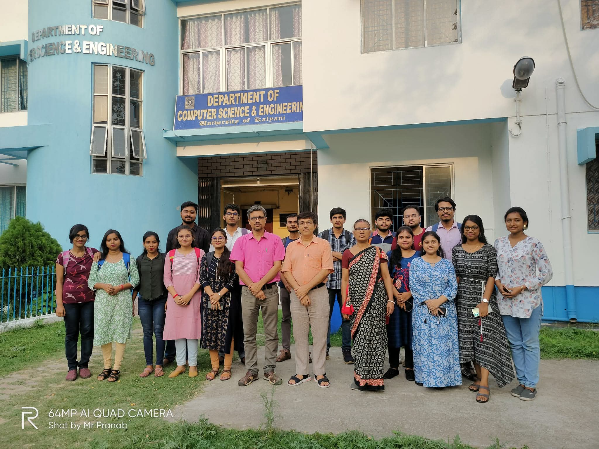
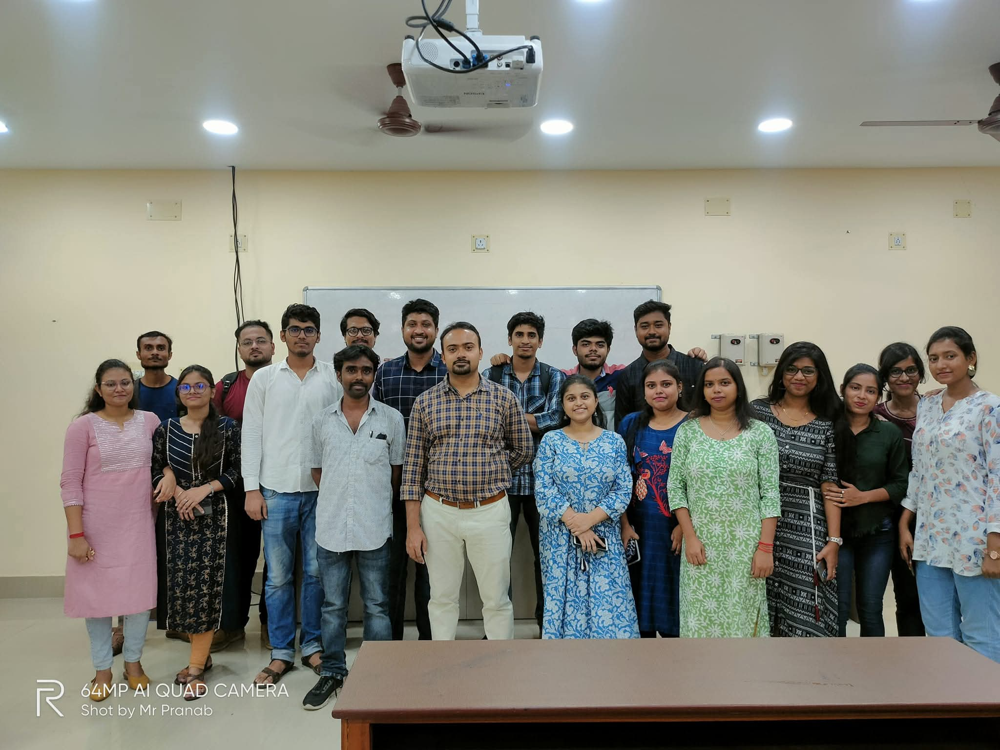
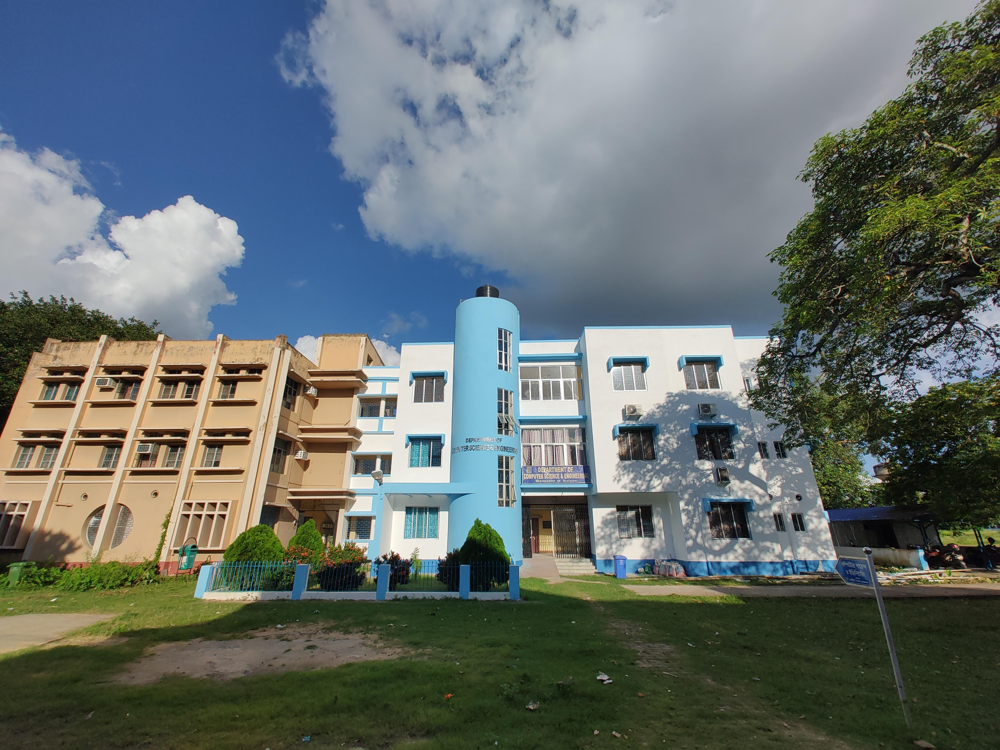
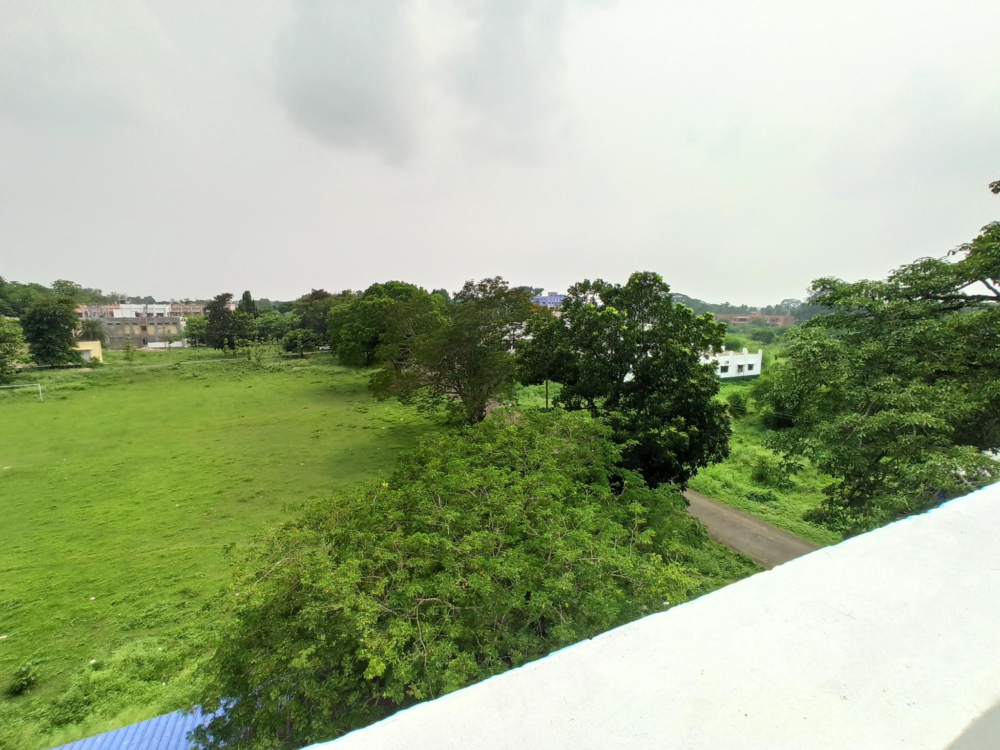
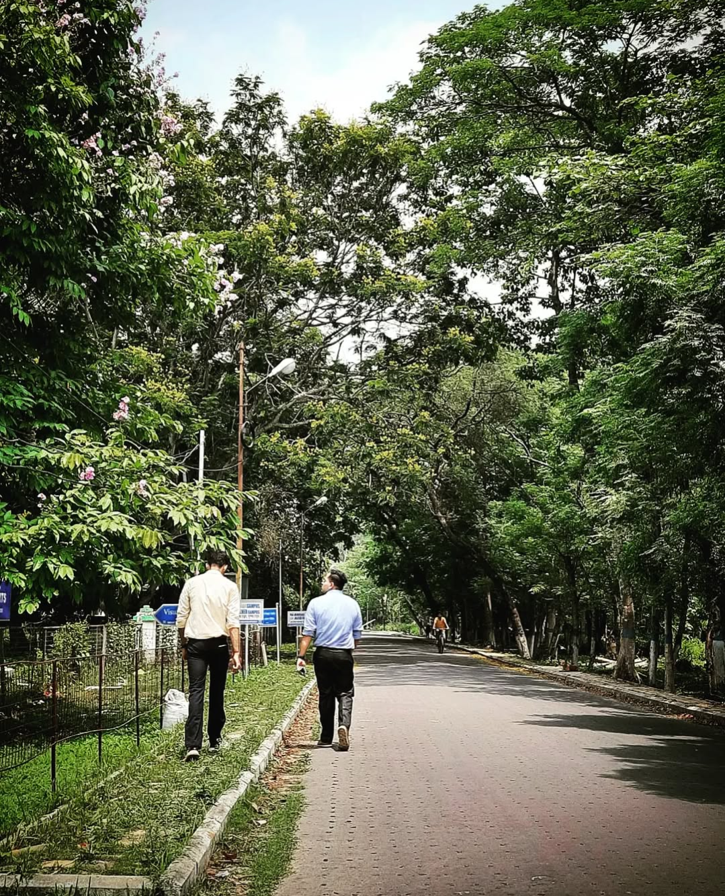

Let’s take a look at a few shots of my alma mater, the University of Kalyani. These are taken at the university from 2021 to 2023 during my M.Sc degree.
Pictures with Faculty Members
 
Dept. of CSE Building

View from rooftop of Dept. Building

Campus Tour Video
This was captured by my friend Pranab while I was riding the bike on a monsoon day at the University of Kalyani. Play it in 4K and enjoy the lush green campus! (You can also try 2x speed for a quick tour :P)
Random Shot
